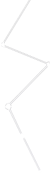

学好硬本领
这是我梦想开始的地方
学好硬本领
赢在软实力
这是我梦想开始的地方
我会去寻找我内心的骄傲
项目执行总监

资源分配
执行优化
监控项目实施
沟通协调 责任管理
高频率市场拜访
全面公正评估
互动营销总监
团队引领
头脑风暴领袖
把握进程 控制流程
持续市场动态流转
沟通策划推广执行
视觉传达设计
有自信 有品位
敏锐洞察力
悦动的思维 完美的色感
传播视觉效果概念
各元素的艺术生成
商业空间设计
有个性 有创意
擅长平面布局
瞬间灵感迸发全新空间呈现
对话分析 现场作为
立体思维穿透力
造型设计
服装风格
品牌定位
一手流行趋势
搭配应用技巧
色彩美学包装
品牌形象大使
7
8
9
10